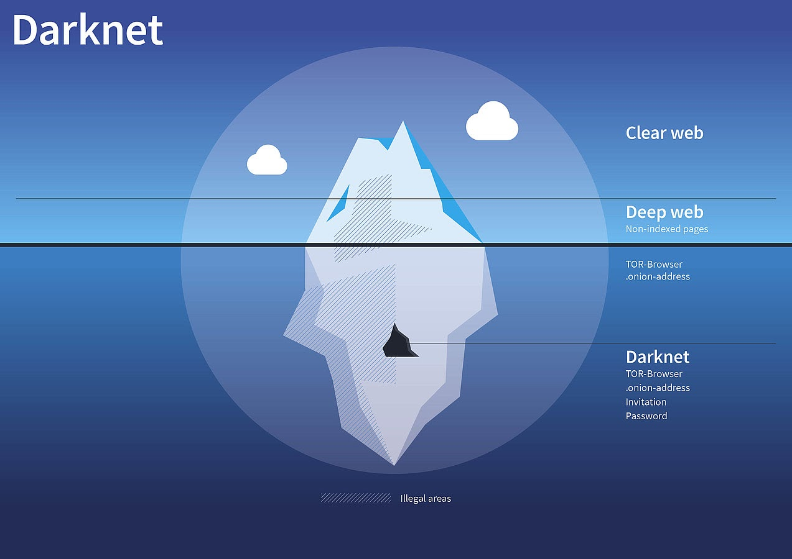

Introduction
What is darknet?
What was it made for?
Why was it exposed for public use?
How does it work?
Who uses it?
What is it used for?
How can I get access to it?
Sources
What is dark net?
Darknet is a small, very secure part of web which is only accessible by TOR browser.
